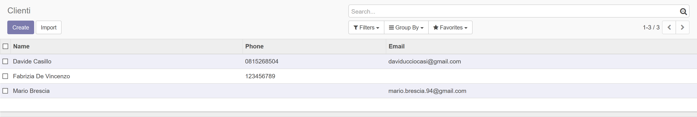
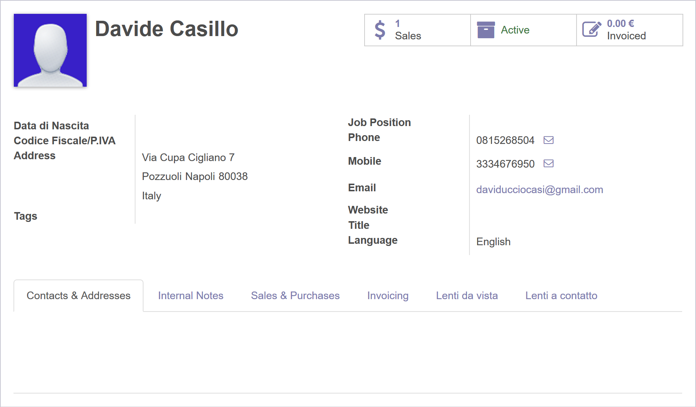
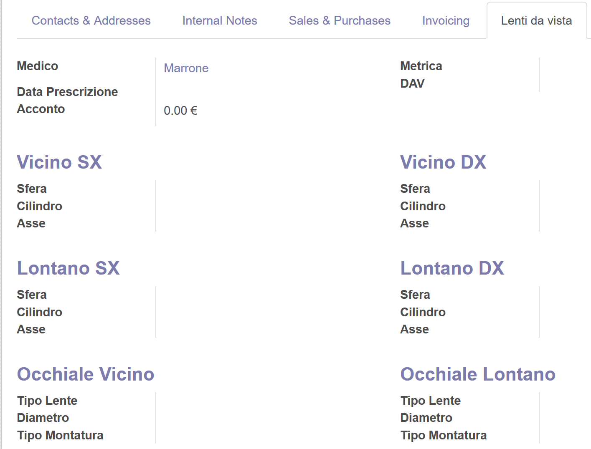
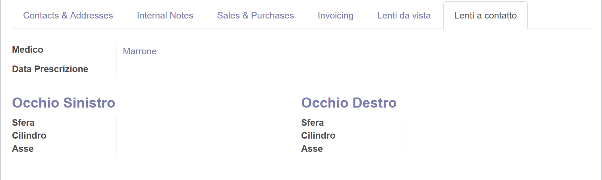
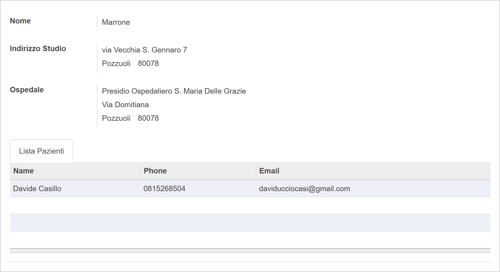

Gestire negozi di ottica e di optometria
Semplice e Immediato

Un'interfaccia moderna che ti permette di ottenere tutte le informazioni che desideri.
Anagrafica
Gestisci i dati anagrafici dei tuoi clienti.

Optometrica
Una semplice interfaccia che permette di gestire la tipologia di lenti, gradiazione e montatura.

Contattologia
Controlla la tipologia di lenti a contatto che usa ogni tuo cliente.

Sezione Medici
Aggiungi e tieni traccia di tutti i medici dei tuoi clienti.
